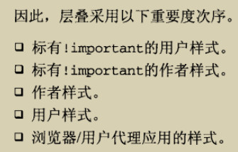

层叠和继承（Cascade and inheritance）
在上一节中，我们学习了多种多样的CSS选择器。但在实际的工作中，我们可能还有些疑惑：当有多个选择器作用在一个元素上时，哪个规则最终会应用到元素上？其实这是通过层叠机制来控制的，这也和样式继承(元素从其父元素那里获得属性值)有关。在本节中中我们将定义什么是层叠，层叠的重要性，什么是层叠的特殊性，以及元素属性如何从不同的规则中继承。这篇文章旨在明晰其中的部分复杂性；如果你不能立即理解，也没关系，这是CSS 理论中最复杂的地方。
任务目标：了解层叠及层叠的特殊性，以及在CSS中继承是如何工作的。
层叠：
CSS 是 Cascading Style Sheets 的缩写，这暗示层叠（cascade）的概念是很重要的。
最基本的：它表明CSS规则的顺序很重要，但它比CSS规则的顺序更复杂。
层叠就是浏览器对多个样式来源进行叠加，最终确定结果的过程。
css样式来源有5个，分别是行内样式（<a style="">）,内部样式(<style></style>),外部样式（写在css文件中的样式），浏览器用户自定义样式，浏览器默认样式。
按照其来源优先级为行内样式>内部样式>外部样式>浏览器用户自定义样式>浏览器默认样式
层叠可以理解为样式规则的优先级。冲突的声明需要通过层叠来排序，最终确定文档的表现。
什么选择器在层叠中胜出取决于三个因素（这些因素都是按重量级的顺序来排列的——前一个因素可以推翻后一个因素）：
1.重要性（Importance）
2.特殊性（Specificity）
3.源码顺序（Source order）
重要性（Importance）
在CSS中，您可以使用一种特殊的语法来确保某个声明始终胜过所有其他声明：！important。把它加在属性值的后面可以使这条声明有无比强大的力量。 CSS2.1称之为重要声明：表示有时这个声明可能非常重要，超过其他声明。
!important总是在分号前面即放在声明的最后。
!important没有特殊性（权值），是为了将重要声明与非重要声明分开考虑。
一个重要声明与一个非重要声明冲突，胜出的总是重要声明。
重要声明的特殊性冲突会在重要声明内部解决，不会与非重要声明相混。
知道 !important存在是很有用的，这样当你在别人的代码中遇到它时，你就知道它是什么了。
由于 !important 改变了层叠正常工作的方式，因此调试CSS问题，尤其是在大型样式表中，会变得非常困难。我们建议你千万不要使用它，除非你没有其他选择才使用它。
注意：覆盖重要声明的唯一方法是在后面的源码或者一个拥有更高特殊性的源码中包含相同的 !important 特性的声明。
CSS声明的重要性取决于它所指定的样式表 - 用户可以设置自定义样式表来覆盖开发人员的样式。
冲突的声明将按以下顺序应用，后一个将覆盖前一个的声明，优先级由上至下依次提高：
1. 用户代理样式表的声明 (例如：未设置其他样式时使用浏览器的默认样式)
2. 用户样式表的普通声明（由用户设置的自定义样式）。
3. 作者样式表的普通声明（这是我们设置的样式，Web开发人员）。
4. 作者样式表的重要声明
5. 用户样式表中的重要声明
即

HTML：
<p class="better">This is a paragraph.</p>
<p class="better" id="winning">One selector to rule them all!</p>
CSS：
#winning {
background-color: red;
border: 1px solid black;
}
.better {
background-color: gray;
border: none !important;
}
p {
background-color: blue;
color: white;
padding: 5px;
}
效果图：

1、
第三条规则 :
p {
background-color: blue;
color: white;
padding: 5px;
}
color 和 padding 被运用了, 但 background-color没有，为什么？实际上，这三种情况都应该应用，因为在源代码顺序后面的规则通常会覆盖较早的规则。
这里是因为 ID/类选择器优先于元素选择器，所以前面的规则被运用了。
2、
HTML：
<p class="better">This is a paragraph.</p>
<p class="better" id="winning">One selector to rule them all!</p>
CSS：
#winning {
background-color: red;
border: 1px solid black;
}
.better {
background-color: gray;
border: none !important;
}
这两个<p>元素都有 class属性并带有 better属性值, 但是第二个<p>元素有 id 值为winning 。 因为ID选择器比class选择器和元素选择器的特殊性更高(在一个页面上一个元素的id是唯一的, 而很多元素可以有相同的class — 所以ID 选择器是优先级更高的)。因此，第一个<p>元素获得类选择器指定的灰色背景色，没有边框， 第二<p>个元素应用红色背景色和1px的黑色边框。
第二个<p>元素获得红色背景色，但没有边框。因为 !important 在第二条规则中的声明—— border: none之后写入它意味着尽管id具有更高的优先性，该声明也将优先于前面规则中的边框声明。
小结：
因为
background-color: gray; 覆盖 background-color: blue;
border: none !important; 覆盖 border: 1px solid black;
所以：第一个<p>元素剩下四个声明：background-color: blue;和border: none !important;以及color: white;和 padding: 5px;
background-color: red; 覆盖 background-color: gray; 和 background-color: blue;
border: none !important; 覆盖 border: 1px solid black;
所以：第二个<p>元素剩下四个声明：background-color: red;和border: none !important;以及color: white;和 padding: 5px;
特殊性（优先级）：权值也被叫做权重
在修复bug时特殊性极其重要，因为你需要了解哪些规则优先及其原因。出现特殊性冲突时，可以在它的父元素和选择器中添加ID，提高该元素的特殊性，如果能解决问题，就说明其他地方可能有更特殊的规则，它覆盖了你的规则。
1.行内（内联）样式：权值为1000 或者说特殊性 1,0,0,0
2.ID选择器：权值为100 或者说特殊性 0,1,0,0
3.类选择器、伪类、属性选择器：权值为10 或者说 特殊性 0,0,1,0
4.元素选择器、伪元素：权值为1 或者说 特殊性 0,0,0,1
5.通配选择器：权值为0 或者说特殊性 0,0,0,0 ; 结合符没有特殊性。所以结合符（例如“+”、“>”、“~”、“ ”）和通配选择器 对特殊性没有贡献。
6.继承的CSS完全没有特殊性，连0特殊性也没有。（所以继承样式会被用户代理层叠！）
7.通配符的权值要大于继承和结合符。（所以通配符可以层叠用户代理的默认样式）
css 关于同一个类里多个类名的优先级？会受到权重影响而覆盖：
<div class="a">text1</div>
<div class="b">text2</div>
<div class="a b">text3</div>
<div class="b a">text4</div>
.a { color: red; }
.b { color: green; }
.a.b { color: blue; }
.b.a{ color: orange; }
text1 ===> red
text2 ===> green
text3 ===> orange
text4 ===> orange
选择器优先级
!important > 行内样式 > id选择器 > class选择器 > 标签选择器 > * > 默认 > 继承
注意：如果多个选择器具有相同的重要性和特殊性，哪一个选择器胜出取决于源码顺序。


HTML：
<div id="outer" class="container">
<div id="inner" class="container">
<ul>
<li class="nav"><a href="#">One</a></li>
<li class="nav"><a href="#">Two</a></li>
</ul>
</div>
</div>
CSS：
/* 特殊性: 0101 */
#outer a {
background-color: red;
}
/* 特殊性: 0201 winner 赢家winner*/
#outer #inner a {
background-color: blue;
}
/* 特殊性: 0104 */
#outer div ul li a {
color: yellow;
}
/* 特殊性: 0113 赢家winner*/
#outer div ul .nav a {
color: white;
}
/* 特殊性: 0024 */
div div li:nth-child(2) a:hover {
border: 10px solid black;
}
/* 特殊性: 0023 */
div li:nth-child(2) a:hover {
border: 10px dashed black;
}
/* 特殊性: 0033 赢家winner*/
div div .nav:nth-child(2) a:hover {
border: 10px double black;
}
a {
display: inline-block;
line-height: 40px;
font-size: 20px;
text-decoration: none;
text-align: center;
width: 200px;
margin-bottom: 10px;
}
ul {
padding: 0;
}
li {
list-style-type: none;
}
效果图：


源码顺序：
如上所述，如果多个选择器具有相同的重要性和特殊性，哪一个规则获胜——后面的规则将战胜先前的规则，书写在后面的优先级高。
例如：
p {
color: blue;
}
/* 这个规则将战胜第一个规则 */
p {
color: red;
}
这个例子中的第一个规则将获胜，因为特殊性高于源码顺序：
/* 这个规则胜出，我是类选择器，我更特殊 */
.footnote {
color: blue;
}
p {
color: red;
}
关于混合规则的说明
在考虑所有这些层叠理论时以及哪些样式覆盖其他样式应该记住的一件事是：所有这些都发生在属性上 -不是整个规则覆盖其他规则，而是属性覆盖其他属性。
当多个CSS规则匹配相同的元素时，它们都被应用到该元素中。只有在这之后，所有冲突的属性才会被评估，以确定哪个样式会战胜其他样式。
HTML：
<p>I'm <strong>important</strong></p>
CSS：
/* 特殊性: 0002 */
p strong {
background-color: khaki;
color: green;
}
/* 特殊性: 0001 */
strong {
text-decoration: underline;
color: red;
}
效果图：

在这个例子中，因为特殊性的关系，第一条规则中的color属性覆盖掉了第二条中的颜色值。不过，第一条中的 background-color和第二条中的text-decoration 的属性都在strong元素之中得到了体现。你也注意到这个元素的字体是加粗的：这是浏览器默认的样式规则。
继承
继承机制：样式属性不仅会应用到指定的元素，还会应用到它的后代元素。
可继承属性与不可继承属性：属性可以被继承与属性不可以被继承的意思。
继承属性值（inherit）：元素可以从其父元素那里获得属性值。
计算值：Computed Value，从指定的值计算而来的值。一般来说是，浏览器会在不进行实际布局的情况下，所能得到的最具体的值。比如 60%，
例如，如一个元素的属性值为 font-size:16px 和 padding-top:2em, 则 padding-top 的计算值为 32px (字体大小的2倍)。
继承的值根本没有特殊性，甚至连0特殊性都没有。所以会被浏览器默认样式覆盖（特例：<a>标签color属性会覆盖，其他属性可继承。<hx>的大小也是不能被继承的，它们都有一个默认值）。


1、浏览器本身对<a>元素有默认样式（user agent stylesheet）（图二），对<span>元素没有默认样式（图一）
2、<a> 的浏览器默认样式里有带有伪类，其特异性值是 [0,0,1,1]，由于CSS的层叠，用户设置 div 特异性的是 [0,0,0,1] （子<a>再继承），导致<a>特异性值比上面浏览器默认样式设置低，无法覆盖。所以<a>元素继承自div（Inherited from div）的red颜色被划掉了（图二）。
优先考虑更上面的元素，例如：<html>、<body>或者*通配选择器。


width、height、margin，padding，border 和 background-image、background-color 等等属性不会被继承。
一般地，大多数盒子模型属性不会被继承。如果在容器元素上设置这些属性并让它们由每个子元素继承，那么样式/布局会发生混乱。
1 . 控制继承

CSS为指定继承提供了四种特殊的通用属性值：
1、inherit：选中元素继承其所有父元素的样式，包括正常情况下不可继承的样式！！！
2、initial ：将所有选中元素的属性重置为CSS规范中定义的初始值。
如果浏览器默认样式表中没有这个属性值，而它的属性是继承属性，那么该属性值就被视为 inherit。
3、unset ：如果属性可继承，那么将它视为 inherit，否则视为 initial。选中的元素继承从父元素向下传递的任何可继承值。 如果没有可用的可继承值，则CSS规范的初始值将用于每个属性。
4、revert：如果被设置属性值则被设置成用户自定义样式所定义的属性， 否则属性值被设置成用户代理（浏览器）的默认样式。
注意：initial 和 unset 不被IE支持。revert只有safari支持。
HTML：
<ul>
<li>Default <a href="#">link</a> color</li>
<li class="my-class-1">Inherit the <a href="#">link</a> color</li>
<li class="my-class-2">Reset the <a href="#">link</a> color</li>
<li class="my-class-3">Unset the <a href="#">link</a> color</li>
</ul>
CSS：
body {
color: green;
}
.my-class-1 a {
color: inherit;
}
.my-class-2 a {
color: initial;
}
.my-class-3 a {
color: unset;
}
效果图：

1、需要注意的是默认情况下浏览器设置链接的颜色为蓝色，而不是自然继承color属性，因此在我们列表中的第一个链接是蓝色的。
2、 第二个规则设置一个类 my-class-1 的元素内的链接，并从父类继承它的颜色。即链接继承了父元素<li>的颜色，默认情况下<li>的颜色来自于它的父元素 <ul> , 最后<ul> 继承自 <body>元素，而<body>的color 根据第一条规则设置成了绿色。
3、 第三个规则选择了在元素上使用类 my-class-2 的链接然后设置他们的颜色为 initial 。通常， initial 的值被浏览器设置成了黑色，因此该链接被设置成了黑色。
4、最后一个规则选择了在元素上使用类 my-class-3 的链接然后设置它们的颜色为 unset ——即我们不设置值。因为color属性是一个可继承的属性，它实际上就像把值设置成 inherit 一样。结果是，该链接被设置成了与body一样的颜色——绿色。
2 . 重新设置所有的属性值（CSS3属性all）
CSS简写属性all将所有属性（除了 unicode-bidi 与 direction 之外）的属性值重设为它们的初始值（initial value）或者 继承值（inherited value） 亦或 其他来源样式表的值。这是撤消对样式所做更改的便捷方式，以便可以在开始新更改之前返回到已知的起点。

1、没有 all 属性：

<blockquote>元素使用浏览器的默认样式（缩进）以及特定的背景和文本颜色。 它也表现为块元素：它后面的文本位于它下面。
2、all: unset;

<blockquote>元素不使用浏览器默认样式：因为dispaly（不可继承属性），而display默认初始值为inline，所以它现在是一个行内元素（initial value 初始值），它的background-color 是 transparent（ initial value 初始值），但是它的 font-size 仍是 small（inherited value 继承值）而且它的color （可继承属性，inherit）是 blue（inherited value 继承值）。
初始值 Initial Values
每个属性都有一个初始值，在属性的定义表中定义。 如果属性不是继承属性，并且层叠没有产生值，则属性的指定值是其初始值。
3、all: initial;

<blockquote>元素不使用浏览器默认样式：它现在是一个行内元素（initial value 初始值 ），它的background-color 是 transparent（initial value 初始值），但是它的 font-size 是normal ( initial value 初始值 )而且它的color 是 black（initial value 初始值）。
4、all: inherit;

<blockquote>元素不使用浏览器默认样式：它现在是一个块级元素，（从<body>元素继承的值），它的background-color是＃F0F0F0（inherited value 继承值），它的font-size 是 small（ inherited value 继承值），它的color （可继承属性，inherit）是 blue（inherited value 继承值）。